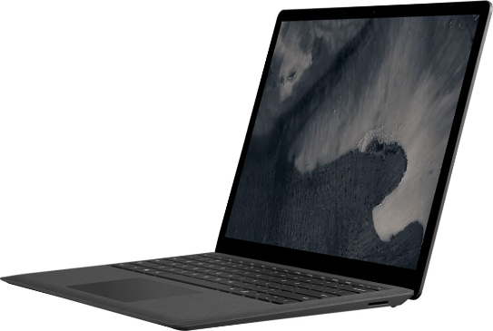
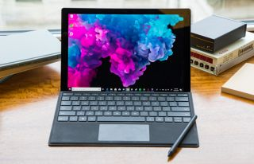

| Huawei Laptop |
Huawei Surface Laptop
سعر ومواصفات لاب توب Huawei Surface Laptop 2 Core i5 باصدارين Core i5-8350U و Core i5-8250U الجيل الثامن من انتل ، ويأتي مع كرت رسوميات مدمج يصل الي Intel UHD Graphics 620 ، وذاكرة عشوائية تصل الي 16 جيجا رام ، وشاشه عرض 13.5 بوصة IPS بجودة 3k بدقة 2256 × 1504 بكسل دعم اللمس المتعدد حتي 10 اصبع بطبقة حماية كورنينغ غوريلا غلاس 3 ،اما التخزين يأتي بهارد فائق السرعة SSD بسعة تصل الي 1 تيرا بايت ، ومزود اللاب توب بطارية ليثيوم بوليمر 45 وات تصل مدة التشغيل الي ما يصل إلى 14.5 ساعة من تشغيل الفيديو ، ويعمل اللاب توب بأحدث انظمة مايكروسوفت Windows 10 .
|
Huawei Surface Pro 7
سعر ومواصفات لاب توب Huawei Surface Pro 7 في سلسلة سيرفس برو لابتوب المتحول 2 في 1 الذي يجمع بين الاداء و الاناقة كل هذا في جهاز صغير الحجم ، وموزد الجهاز بمعالجات الجيل العاشر من شركة انتل اصدارات Core™ i3-1005G1 ثنائي النواه و Core i5-1035G4 رباعي النواه و Core i7-1065G7 رباعي النواه ، مع كرت رسوميات مدمج Intel® Iris™ Plus لمعالجات I5 و I7 واصدار كرت Intel® UHD Graphics لمعالج I3 ، وذاكرة الوصول العشوائية تصل الي 16 جيجا رام LPDDR4x بسرعة 3733 ميجا هيرتز ، وشاشه عرض 12.3 بوصة PixelSense بدقة 2736 × 1824 بكسل دعم اللمس المتعدد حتي 10 اصبع ، مزود بقلم Surface Pen الذي يمكنك من الكاتبة والرسم علي الشاشة كأنك تكتب بشكل حقيقي في مذكراتك ، اما التخزين يأتي بهارد فائق السرعة SSD بسعة تصل الي 1 تيرا بايت ، اما عن تصميم الجهاز يأتي بشكل نحيف للغاية حيث يصل وزنه الي 775 جرام فقط ، وبفضل تصمنيه قادر علي التحول من لاب توب الي تابلت بكل سهولة ، ويأتي الجهاز ببطارية طويلة الأمد بمدة تشغيل تصل الي 8 ساعات من العمل المتوصل ، ويعمل اللاب توب بأحدث انظمة مايكروسوفت Windows 10 واليكم كافة تفاصيل الإصدارات المختلفة من اللاب توب
|
 |
|
| Huawei Surface |
Huawei Surface Pro 4 Core i7
سعر ومواصفات لاب توب Huawei Surface Pro 4 Core i7 لابتوب 2 في 1 المتحول بمعالج Core i7-6650U الجيل السادس من شركة انتل ، ويأتي مع كرت رسوميات مدمج يصل الي Intel Iris Graphics 540 ، وذاكرة عشوائية تصل الي 16 جيجا رام ، وشاشه عرض 12.3 بوصة IPS بجودة 3k بدقة 2736 × 1824 بكسل دعم اللمس المتعدد حتي 10 اصبع ودعم قلم Surface Pen ،اما التخزين يأتي بهارد فائق السرعة SSD بسعة تصل الي 1 تيرا بايت ، ومزود اللاب توب بطارية ليثيوم بوليمر 2 خلايا 38.2 وات ، ويعمل اللاب توب بأحدث انظمة مايكروسوفت Windows10 Home .
|
Huawei Surface Pro 6
سعر ومواصفات لاب توب Huawei ROG Strix G G531GT سعر ومواصفات لاب توب Huawei Surface Pro 6 تقدمه اليكم شركة ميكروسوفت الامريكية لابتوب 2 في 1 بمعالجات Core i7 و Core i5 من الجيل الثامن من شركة انتل ، ويأتي مع كرت رسوميات مدمج يصل الي Intel® UHD Graphics 620 ، وذاكرة عشوائية تصل الي 16 جيجا رام ، وشاشه عرض 12.3 بوصة IPS بدقة 2736 × 1824 بكسل دعم اللمس المتعدد حتي 10 اصبع ،اما التخزين يأتي بهارد فائق السرعة SSD بسعة تصل الي 1 تيرا بايت ، ويعمل اللاب توب بأحدث انظمة مايكروسوفت Windows 10 ، واليكم كافة تفاصيل الإصدارات المختلفة من اللاب توب .
|
 |